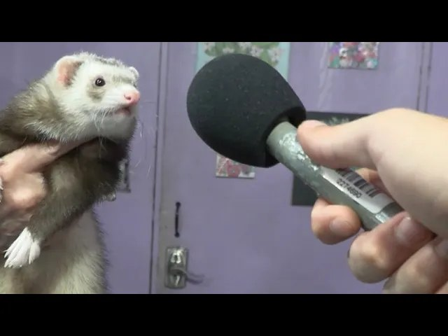
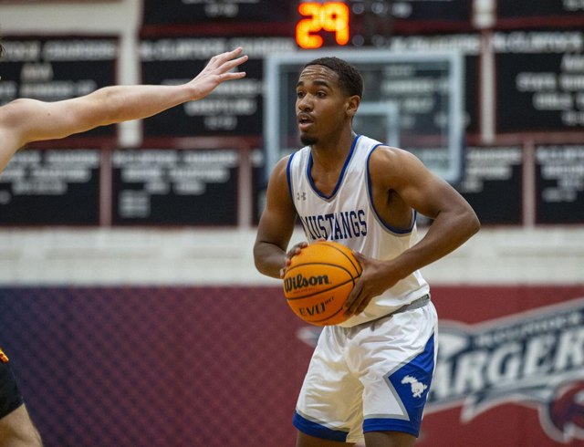
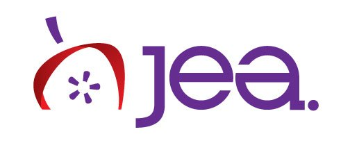
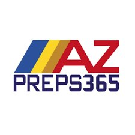
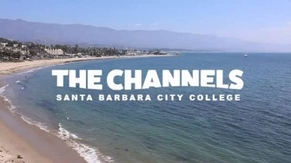

Archive
The back catalog.
Older and published work, kept on the record. Selected client projects live on the Work page. This is the wider library: past films, photo essays, published writing, and broadcast.

01/
Arizona Ferret Rescue/
Nonprofit PSA, ASU Cronkite
Video

02/
Jashawn Kinney: a lasting impact at Dobson/
East Valley Tribune, feature
Writing

03/
Live sports broadcast/
NFHS Network, high school football in-game production
Broadcast

04/
A close look at livestreaming with mimoLive/
JEA Digital Media, how-to
Writing
05/
Santa Barbara sports writing/
Noozhawk, 8 articles
Writing

06/
Arizona prep sports writing/
AZPreps365, 5 articles
Writing

07/
City College sports writing/
The Channels, 9 pieces
Writing